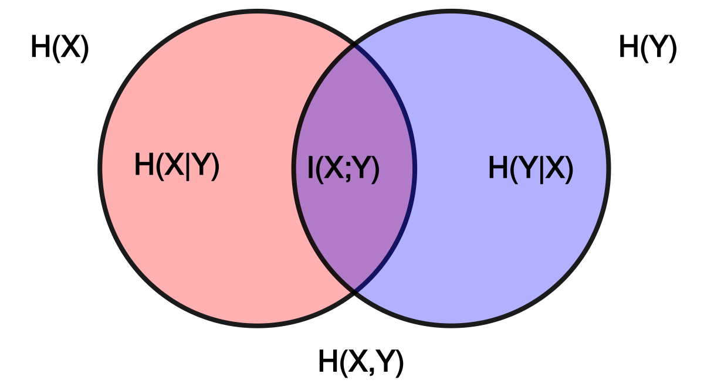

生成模型中的互信息
基础知识
在信息论中，随机变量 \(X\) 的（微分）熵定义为 \(-\log p(x)\) 的期望： \[ H(X)=-\int_xp(x)\log p(x)\mathrm dx=-\mathbb E_X[\log p(X)] \] 当涉及两个随机变量 \(X,Y\) 时，对它们的联合分布求熵也就得到了联合熵： \[ H(X,Y)=-\int_x\int_yp(x,y)\log p(x,y)\mathrm dx\mathrm dy=-\mathbb E_{X,Y}[\log p(X,Y)] \] 当其中一个随机变量给定时，例如 \(X=x\)，我们可以对条件概率分布 \(p(Y\vert X=x)\) 求它的熵： \[ H(Y\vert X=x)=-\int_y p(y\vert x)\log p(y\vert x)\mathrm dy=-\mathbb E_{Y\vert X=x}[\log p(Y\vert X=x)] \] 值得注意的是，\(H(Y\vert X=x)\) 建立在已知 \(X\) 取值为 \(x\) 的情况下。那么在平均意义下，继续对 \(X\) 取期望，就得到了条件熵： \[ \begin{align} H(Y\vert X)&=-\int_xp(x)\int_y p(y\vert x)\log p(y\vert x)\mathrm dx\mathrm dy\\ &=-\int_x\int_y p(x,y)\log p(y\vert x)\mathrm dx\mathrm dy\\ &=-\mathbb E_{X,Y}[\log p(Y\vert X)] \end{align} \] 不难证明，条件熵加上作为条件的那个随机变量的熵（也许可以称作边缘熵？），正好就是联合熵： \[ \begin{align} H(Y\vert X)+H(X)&=-\int_x\int_y p(x,y)\log p(y\vert x)\mathrm dx\mathrm dy-\int_xp(x)\log p(x)\mathrm dx\\ &=-\int_x\int_y p(x,y)\log p(y\vert x)\mathrm dx\mathrm dy-\int_x\int_yp(x,y)\log p(x)\mathrm dx\mathrm dy\\ &=-\int_x\int_yp(x,y)\log\big(p(y\vert x)p(x)\big)\mathrm dx\mathrm dy\\ &=-\int_x\int_yp(x,y)\log p(x,y)\mathrm dx\mathrm dy\\ &=H(X,Y) \end{align} \] 这个关系式可以类比 \(p(y\vert x)p(x)=p(x,y)\) 来记忆。
条件熵 \(H(Y\vert X)\) 可以理解为在给定 \(X\) 的条件下，\(Y\) 还剩下的不确定性。例如，当 \(X\) 与 \(Y\) 独立时，\(X\) 不能给 \(Y\) 带来任何新的信息，即 \(H(Y\vert X)=H(Y)\)，\(Y\) 的不确定性不变；当 \(X\) 完全决定了 \(Y\) 时，给定 \(X\) 的条件下 \(Y\) 没有任何的不确定性，即 \(H(Y\vert X)=0\). 因此，我们用熵减去条件熵来表示 \(X\) 带给 \(Y\) 的不确定性，即互信息： \[ I(X;Y)=H(Y)-H(Y\vert X) \] 如果把互信息的表达式展开： \[ \begin{align} I(X;Y)&=H(Y)-H(Y\vert X)\\ &=-\int_yp(y)\log p(y)\mathrm dy+\int_x\int_yp(x,y)\log p(y\vert x)\mathrm dx\mathrm dy\\ &=-\int_x\int_yp(x,y)\log p(y)\mathrm dx\mathrm dy+\int_x\int_yp(x,y)\log p(y\vert x)\mathrm dx\mathrm dy\\ &=\int_x\int_y p(x,y)\log\frac{p(y\vert x)}{p(y)}\mathrm dx\mathrm dy\\ &=\int_x\int_y p(x,y)\log\frac{p(x,y)}{p(x)p(y)}\mathrm dx\mathrm dy\\ &=\text{KL}\big(p(x,y)\Vert p(x)p(y)\big) \end{align} \] 我们发现互信息其实就是 \(p(x,y)\) 与 \(p(x)p(y)\) 之间的 KL 散度。由于 KL 散度衡量了两个分布之间的差异，所以从这个角度看，互信息在衡量 \(p(x,y)\) 与 \(p(x)p(y)\) 之间的差异（注意 \(p(x)p(y)\) 确实是一个合法的概率分布）。当 \(X\) 与 \(Y\) 独立时，\(p(x,y)=p(x)p(y)\)，KL 散度为 0，也即互信息为 0；否则，\(p(x,y)\) 不能拆成 \(p(x)p(y)\)，这两个分布存在差异，KL 散度非零，即互信息非零。
从上式也能看出互信息其实是对称的，\(X\) 带给 \(Y\) 的不确定性等于 \(Y\) 带给 \(X\) 的不确定性： \[ I(X;Y)=H(Y)-H(Y\vert X)=H(X)-H(X\vert Y) \] 以上涉及到的关系式可以用如下韦恩图直观地可视化出来：

InfoGAN & InfoVAE
在生成模型的研究中，我们常常认为观测到的数据 \(\mathbf x\) 背后是由维度更低的隐变量 \(\mathbf z\) 控制的。记数据的真实分布为 \(p_\text{data}(\mathbf x)\)，我们无法直接写出它的形式，只能从中采样若干样本构成训练集。因此，为了对未知的 \(p_\text{data}(\mathbf x)\) 进行建模，我们可以构建一个解码器（生成器） \(p_\theta(\mathbf x\vert\mathbf z)\)，并预定义一个隐变量的先验分布 \(p(\mathbf z)\)（例如标准正态分布），那么就能够生成如下的数据分布： \[ p_\theta(\mathbf x)=\int_{\mathbf z}p_\theta(\mathbf x\vert\mathbf z)p(\mathbf z)\mathrm d\mathbf z \] 训练生成模型的目标就是学习参数 \(\theta\) 使得 \(p_\theta(\mathbf x)\) 近似于 \(p_\text{data}(\mathbf x)\). 然而，直接计算或遍历隐空间近似 \(p_\theta(\mathbf x)\) 是不可行的，因此不同生成模型采用了不同的方法来解决这个问题。
对于 GANs 一类生成模型，我们使用一个判别器与生成器做对抗，促使生成器的数据分布尽可能接近真实的数据分布。可以证明，GANs 在隐式地最小化 \(p_\theta(\mathbf x)\) 与 \(p_\text{data}(\mathbf x)\) 之间的 JS 散度（或 F 散度、Wasserstein 距离等）。在这个情形下，为了避免生成器忽略掉隐变量 \(\mathbf z\)，我们可以最大化互信息 \(I_{p_\theta}(\mathbf x;\mathbf z)\)，这就是 InfoGAN 的核心思想。
对于 VAEs 一类生成模型，我们引入了变分后验 \(q_\phi(\mathbf z\vert\mathbf x)\) 推导出对数似然 \(\log p_\theta(\mathbf x)\) 的变分下界 ELBO. 其中，\(q_\phi(\mathbf z\vert\mathbf x)\) 实现为一个神经网络编码器。在这个情形下，为了避免编码器将不同的 \(\mathbf x\) 都映射到没有差别的 \(\mathbf z\) 中，即隐变量不包含输入的任何信息，我们可以最大化互信息 \(I_{q_\phi}(\mathbf x;\mathbf z)\)，这就是 InfoVAE 的核心思想。
可以看见，InfoGAN 和 InfoVAE 优化的互信息其实是不同的——前者是为了保留生成器（也就是解码器）的输入和输出之间的信息传递，而后者是为了保留编码器的输入和输出之间的信息传递。
InfoGAN
前文提到，InfoGAN 希望最大化互信息 \(I_{p_\theta}(\mathbf x;\mathbf z)\). 然而，\(I_{p_\theta}(\mathbf x;\mathbf z)\) 本身是 intractable 的，这是因为： \[ I_{p_\theta}(\mathbf x;\mathbf z)=H(\mathbf z)-H(\mathbf z\vert\mathbf x)=H(\mathbf z)+\mathbb E_{p_\theta(\mathbf x,\mathbf z)}\left[\log p_\theta(\mathbf z\vert\mathbf x)\right] \] 其中涉及到了后验分布的计算： \[ \begin{align} p_\theta(\mathbf z\vert\mathbf x)=\frac{p(\mathbf z)p_\theta(\mathbf x\vert\mathbf z)}{p_\theta(\mathbf x)}=\frac{p(\mathbf z)p_\theta(\mathbf x\vert\mathbf z)}{\int_{\mathbf z'}p(\mathbf z')p_\theta(\mathbf x\vert\mathbf z')} \end{align} \] 分母部分需要遍历隐空间——这在绝大多数情况下是不可行的。InfoGAN 的解决方案类似于 VAE——引入变分后验 \(q_\phi(\mathbf z\vert\mathbf x)\) 去近似不可解的真实后验 \(p_\theta(\mathbf z\vert\mathbf x)\)： \[ \begin{align} I_{p_\theta}(\mathbf x;\mathbf z) &=H(\mathbf z)+\mathbb E_{p_\theta(\mathbf x,\mathbf z)}\left[\log p_\theta(\mathbf z\vert\mathbf x)\right]\\ &=H(\mathbf z)+\mathbb E_{p_\theta(\mathbf x,\mathbf z)}\left[\log\frac{p_\theta(\mathbf z\vert\mathbf x)}{q_\phi(\mathbf z\vert\mathbf x)}+\log q_\phi(\mathbf z\vert\mathbf x)\right]\\ &=H(\mathbf z)+\mathbb E_{p_\theta(\mathbf x)}\Big[\underbrace{\text{KL}(p_\theta(\mathbf z\vert\mathbf x)\Vert q_\phi(\mathbf z\vert\mathbf x))}_{\geq 0}+\mathbb E_{p_\theta(\mathbf z\vert\mathbf x)}[\log q_\phi(\mathbf z\vert\mathbf x)]\Big]\\ &\geq H(\mathbf z)+\mathbb E_{p_\theta(\mathbf x,\mathbf z)}\left[\log q_\phi(\mathbf z\vert\mathbf x)\right]\\ &=H(\mathbf z)+\mathbb E_{p(\mathbf z)}\left[\mathbb E_{p_\theta(\mathbf x\vert\mathbf z)}\left[\log q_\phi(\mathbf z\vert\mathbf x)\right]\right] \end{align} \] 于是我们可以通过最大化这个变分下界来最大化互信息。特别地，如果我们固定取 \(p(\mathbf z)\) 为标准正态分布，那么 \(H(\mathbf z)\) 为常数，我们只需要优化 \(\mathbb E_{p(\mathbf z)}\left[\mathbb E_{p_\theta(\mathbf x\vert\mathbf z)}\left[\log q_\phi(\mathbf z\vert\mathbf x)\right]\right]\) 即可。
具体而言，InfoGAN 引入互信息的动机是希望在 GAN 的学习过程中鼓励隐变量的解耦。作者其实并没有直接最大化 \(I(\mathbf x;\mathbf z)\)，而是将隐变量分为两部分：\(\mathbf z\) 是无法解耦的部分，\(\mathbf c\) 是可解耦的部分，并只最大化 \(I(\mathbf x;\mathbf c)\). 根据上面的讨论，引入变分后验 \(q_\phi(\mathbf c\vert\mathbf x)\)： \[ I(\mathbf x;\mathbf c)\geq \mathcal L_I=H(\mathbf c)+\mathbb E_{p(\mathbf c)}\left[\mathbb E_{p_\theta(\mathbf x\vert\mathbf z,\mathbf c)}\left[\log q_\phi(\mathbf c\vert\mathbf x)\right]\right],\quad\mathbf z\sim p(\mathbf z) \] 在实现上，\(\mathbf c\) 可以是离散的，也可以是连续的。为了简便起见，我们将离散 \(\mathbf c\) 的先验分布设为均匀类别分布，连续 \(\mathbf c\) 的先验分布设为标准正态分布，那么上式中的 \(H(\mathbf c)\) 也变成了常数。
\(q_\phi(\mathbf c\vert\mathbf x)\) 使用一个神经网络解码器实现——特别地，这个网络可以与已有的判别器共用浅层部分，只需要最后拉出一个新的 head，因而 InfoGAN 新引入的计算量非常小。对于离散的 \(\mathbf c\)，取 \(q_\phi(\mathbf c\vert\mathbf x)\) 为 softmax 分布，那么容易推出 \(\mathcal L_I\) 就是一个交叉熵损失；对于连续的 \(\mathbf c\)，取 \(q_\phi(\mathbf c\vert\mathbf x)\) 为高斯分布，那么 \(\mathcal L_I\) 就是一个 MSE 损失函数。
InfoVAE
如前文所述，InfoVAE 希望最大化互信息 \(I_{q_\phi}(\mathbf x;\mathbf z)\). 在已有的编码器 \(q_\phi(\mathbf z\vert\mathbf x)\) 下，可以推出 \(I_{q_\phi}(\mathbf x;\mathbf z)\) 由两部分组成： \[ \begin{align} I_{q_\phi}(\mathbf x;\mathbf z)&=\mathbb E_{p_\text{data}(\mathbf x)}\left[\mathbb E_{q_\phi(\mathbf z\vert\mathbf x)}\left[\log\frac{q_\phi(\mathbf z\vert\mathbf x)}{q_\phi(\mathbf z)}\right]\right]\\ &=\mathbb E_{p_\text{data}(\mathbf x)}\left[\mathbb E_{q_\phi(\mathbf z\vert\mathbf x)}\left[\log\frac{q_\phi(\mathbf z\vert\mathbf x)}{p(\mathbf z)}+\log\frac{p(\mathbf z)}{q_\phi(\mathbf z)}\right]\right]\\ &=\mathbb E_{p_\text{data}(\mathbf x)}\big[\underbrace{\text{KL}\big(q_\phi(\mathbf z\vert\mathbf x)\Vert p(\mathbf z)\big)}_\text{regularization}\big]-\underbrace{\text{KL}\big(q_\phi(\mathbf z)\Vert p(\mathbf z)\big)}_\text{prior matching} \end{align} \]
我们发现第一项正好是原 VAE 的 ELBO 中的正则项： \[ \mathcal L_\text{ELBO}=\mathbb E_{p_\text{data}(\mathbf x)}\big[\underbrace{\mathbb E_{q_\phi(\mathbf z\vert\mathbf x)}\left[\log p_\theta(\mathbf x\vert\mathbf z)\right]}_\text{reconstruction}-\underbrace{\text{KL}\big(q_\phi(\mathbf z\vert\mathbf x)\Vert p(\mathbf z)\big)}_\text{regularization}\big] \] 如果将 ELBO 与 \(I_{q_\phi}(\mathbf x;\mathbf z)\) 相加（相当于为原 VAE 新添加一个最大化互信息的目标），这一正则项就被抵消了： \[ \mathcal L_\text{ELBO}+I_{q_\phi}(\mathbf x;\mathbf z)=\mathbb E_{p_\text{data}(\mathbf x)}\left[\mathbb E_{q_\phi(\mathbf z\vert\mathbf x)}\left[\log p_\theta(\mathbf x\vert\mathbf z)\right]\right]-\text{KL}\big(q_\phi(\mathbf z)\Vert p(\mathbf z)\big) \tag{1}\label{1} \] 或者我们也可以理解为，保留重构项不变，将原来的正则项替换成了现在的先验匹配项。直观上，原正则项让不同 \(\mathbf x\) 编码出来的 \(\mathbf z\) 都趋向于同一个先验分布 \(p(\mathbf x)\)，这显然与最大化互信息 \(I_{q_\phi}(\mathbf x,\mathbf z)\) 是矛盾的。而新的先验匹配项只要求整体意义下编码出的 \(\mathbf z\) 与先验分布 \(p(\mathbf x)\) 相近即可，不同的 \(\mathbf x\) 编码出的 \(\mathbf z\) 依旧可以不同，因此有助于保留 \(\mathbf x\) 与 \(\mathbf z\) 之间的互信息。
然而，\(q_\phi(\mathbf z)\) 是 intractable 的，为此，我们可以把 KL 散度换成其他衡量两个分布差异的指标 \(D\)，使得 \(D(q_\phi(\mathbf z)\Vert p(\mathbf z))\) 可解。例如，取 \(D\) 为 JS 散度，那么我们可以通过对抗训练的方式（GANs）来隐式地实现 JS 散度，这就是 Adversarial Autoencoders[7]；而取 \(D\) 为 MMD，则可以按如下方式计算： \[ D_\text{MMD}\big(q_\phi(\mathbf z)\Vert p(\mathbf z)\big)=\mathbb E_{p(\mathbf z),p(\mathbf z')}[k(\mathbf z,\mathbf z')]-2\mathbb E_{q_\phi(\mathbf z),p(\mathbf z')}[k(\mathbf z,\mathbf z')]+\mathbb E_{q_\phi(\mathbf z),q_\phi(\mathbf z')}[k(\mathbf z,\mathbf z')] \] 其中 \(k(\cdot,\cdot)\) 是任一正定核，例如高斯核。作者称这样的模型为 MMD-VAE.
进一步地，为了更好的通用性，作者在 \(\eqref{1}\) 式的基础上引入了两个超参数 \(\alpha,\lambda\) 来调节原 VAE 正则项与新先验匹配项的权重系数。因此，InfoVAE 最终的目标函数为： \[ \begin{align} \mathcal L_\text{InfoVAE}=&\ \mathbb E_{p_\text{data}(\mathbf x)}\left[\mathbb E_{q_\phi(\mathbf z\vert\mathbf x)}\left[\log p_\theta(\mathbf x\vert\mathbf z)\right]\right]-\\ &\ (1-\alpha)\mathbb E_{p_\text{data}(\mathbf x)}\big[\text{KL}\big(q_\phi(\mathbf z\vert\mathbf x)\Vert p(\mathbf z)\big)\big]-\\ &\ (\alpha+\lambda-1) D(q_\phi(\mathbf z)\Vert p(\mathbf z)) \end{align} \] 作者在 MNIST 实验中取 \(\lambda=1000,\alpha=0\).
参考资料
- 互信息(Mutual Information)浅尝辄止（一）：基础概念 - idejie的文章 - 知乎 https://zhuanlan.zhihu.com/p/240676850 ↩︎
- Mutual information. https://en.wikipedia.org/wiki/Mutual_information ↩︎
- 深度学习中常见的互信息的变分上下界(详细推导) - sonta的文章 - 知乎 https://zhuanlan.zhihu.com/p/91900950 ↩︎
- Barber, David, and Felix Agakov. The im algorithm: a variational approach to information maximization. Advances in neural information processing systems 16, no. 320 (2004): 201. ↩︎
- A Tutorial on Information Maximizing Variational Autoencoders (InfoVAE). https://ermongroup.github.io/blog/a-tutorial-on-mmd-variational-autoencoders/ ↩︎
- Zhao, Shengjia, Jiaming Song, and Stefano Ermon. Infovae: Information maximizing variational autoencoders. arXiv preprint arXiv:1706.02262 (2017). ↩︎
- Makhzani, Alireza, Jonathon Shlens, Navdeep Jaitly, Ian Goodfellow, and Brendan Frey. Adversarial autoencoders. arXiv preprint arXiv:1511.05644 (2015). ↩︎